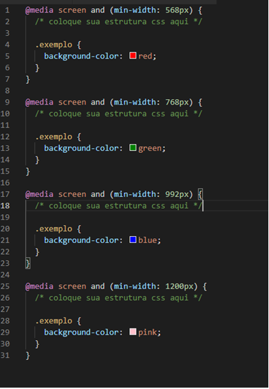

Mobile First
O Mobile First, como a tradução mesmo sugere, é uma forma de começar pensando primeiro em desenvolvimento para dispositivos móveis, para somente depois evoluir para o desktop. Essa é uma forma de ter uma experiência de excelência no mobile e depois fazer uma adaptação para o desktop. Esse conceito de design responsivo foi criado por Luke Wroblewski e, segundo ele, organizar uma solução digital primeiro no mobile ajudaria a eliminar, facilmente, informações irrelevantes de sites.
Experiência do usuário
O desenvolvimento de um site a partir do mobile vai garantir uma experiência mais completa, informativa e agradável para a grande maioria dos usuários, que acessam tudo diretamente pelo celular. Isso porque os parâmetros de priorização de informação mudam, e os desenvolvedores precisam definir quais são os dados mais importantes a serem exibidos. As páginas mobile first são criadas a partir de uma realidade de tela muito menor. Os conteúdos precisam ser disponibilizados de forma mais otimizada e não há espaço para informações irrelevantes. Assim, a tendência é que os sites para dispositivos móveis sejam cada vez mais limpos, funcionais e visualmente agradáveis.
Otimização do carregamento das páginas
A tendência é que os desenvolvedores busquem soluções para um carregamento de página cada vez mais rápido e eficiente. Portanto ao eliminar informações irrelevantes e focar apenas na priorização de exibição, é possível criar sites mais leves, que carreguem de forma progressiva e funcional. Ou seja, o dispositivo abre os conteúdos gradativamente, começando com os blocos iniciais de dados e, quando necessário, as páginas e informações secundárias. Além disso, ao desenvolver um material mobile first, você também deve estar atento ao carregamento de conteúdos multimídia. Fotos e vídeos muito pesados podem ser verdadeiros vilões que vão afastar os usuários da sua página. Tenha sempre em mente que o processo precisa ser rápido, consumindo o mínimo de dados móveis possível.
Como aplicar Mobile First
Utilizando o recurso de Media Query introduzida na CSS3. Este que é uma regra CSS que te possibilita incluir um bloco de propriedades se, e somente, se uma determinada condição for verdadeira. Como estamos falando de mobile first e o desafio em lidar com os diferentes tamanhos de tela, fazemos uso esse método para enfrentar o problema. Ou seja, um conjunto de regras CSS serão aplicadas se uma condição baseada em tamanhos for verdadeira. Desta forma, aplicamos especificidades para os celulares, tablets e desktops, por exemplo. Um exemplo de código CSS fazendo uso de uma Media Query seria assim, neste exemplo já estamos fazendo o uso dos breakpoints mais comuns:
Conclusão
Depois de se desenvolver um layout clean para o celular, passá-lo para o desktop se torna algo muito mais fácil do que seria se o processo fosse inverso. Vários profissionais acabam enfrentando diversos problemas para passar a estrutura do desktop para o celular, seja porque ela é muito complexa, ou porque possui um quantidade de conteúdo muito grande. Porém quando passamos a estrutura do mobile para o desktop praticamente não encontramos dificuldade pois partiremos de uma tela menor para uma maior, com muito mais espaço para se trabalhar aquilo que foi colocado e desenvolvido na tela menor.
O celular se tornou um dos objetos mais importantes no dia a dia das pessoas. O usamos de tal forma que criamos uma certa dependência desse aparelho. Não por menos, pensar em mobile é quesito obrigatório para qualquer projeto web. A maioria dos acessos de quase todos os sites são feitos por dispositivos móveis e isso é tão relevante que o próprio Google utiliza do critério da responsividade (mobile friendly) para avaliar a qualidade do seu site. Ou seja, um dos fatores de ranqueamento dos sites na plataforma de buscas é a responsividade do site, a sua adptação para dispositivos mobile.